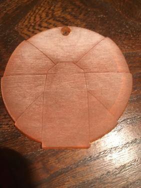

For the coderclass we also have some projects every now and then.
Here is a list of a few projects I did:
Warchild short film:
I made this project together with Douwe Raat and Jacques Lame.
Philips Hue lamps website:
For this project we made a "Simon says!" game using a row of lamps which we give any colors we want. I sadly couldn't find the link to this.
I made this project together with Quinten de Leeuw and Jacques Lame.
Logo in Illustrator.
As our third project we made a logo using the program Illustrator. We then got this logo as an actual item.

I made this all by myself!